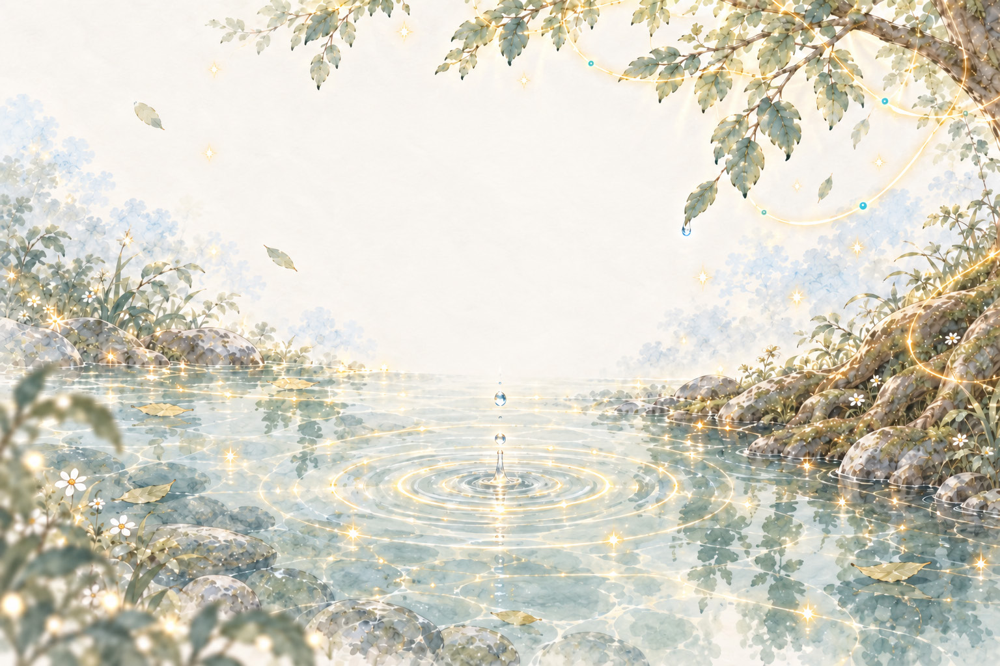
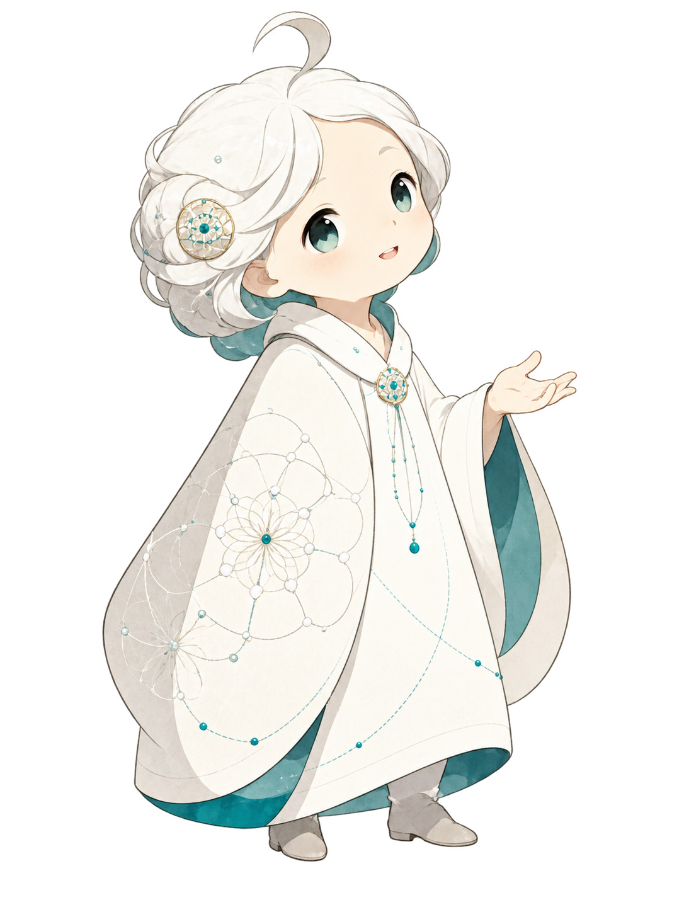
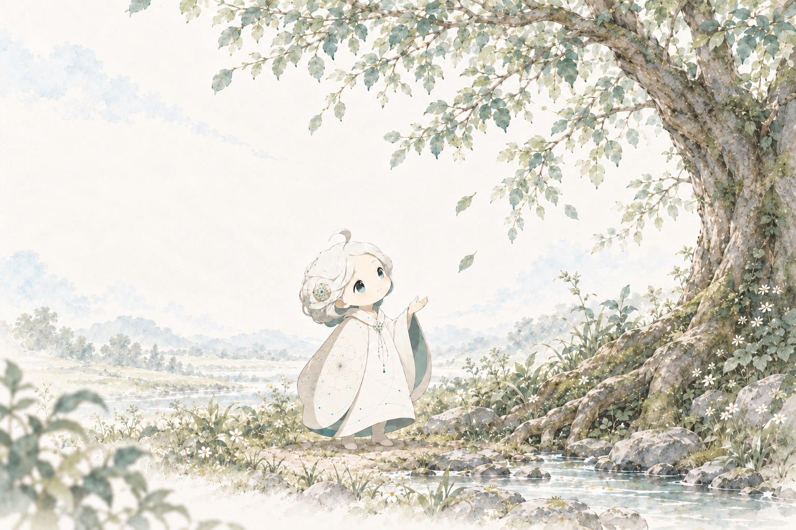
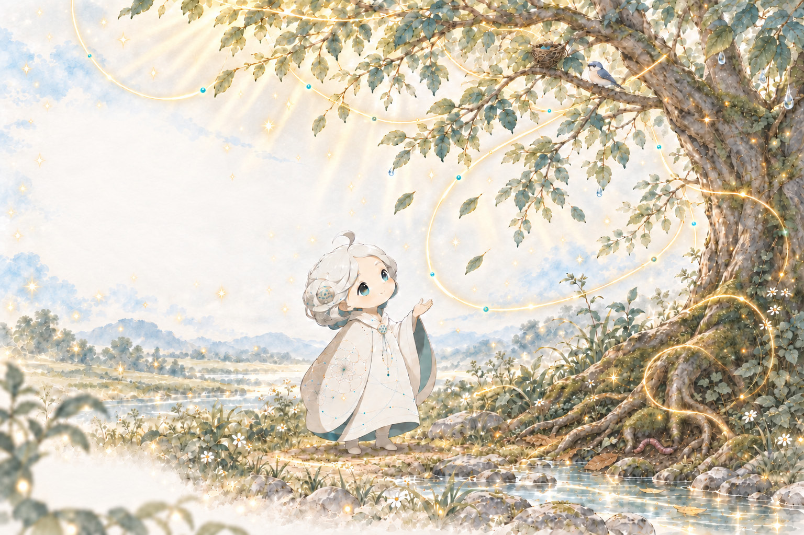
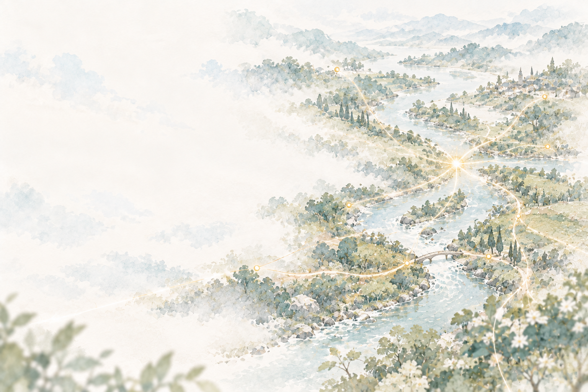
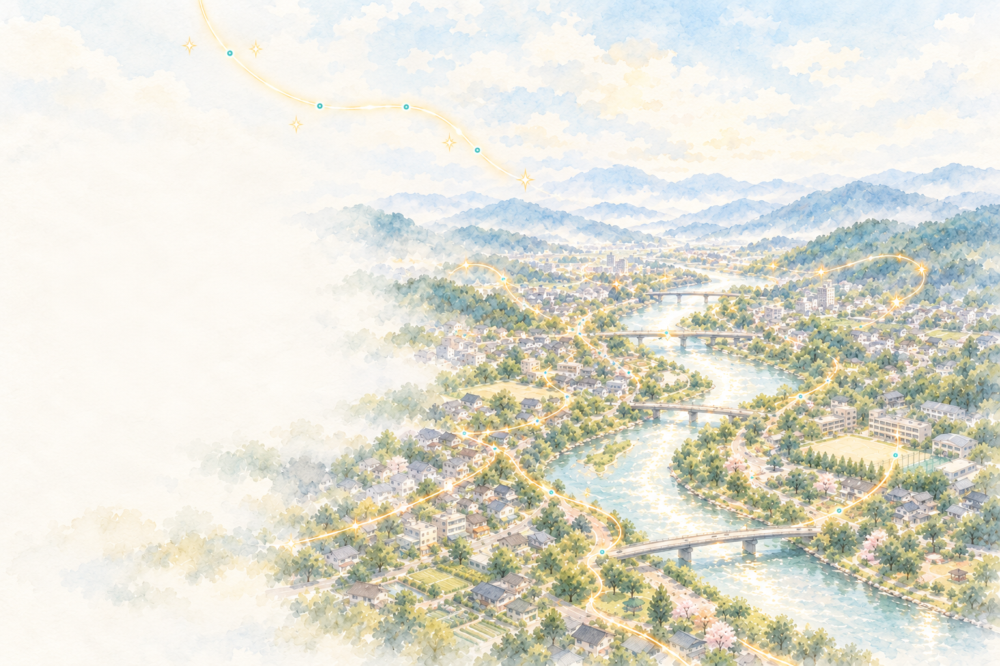
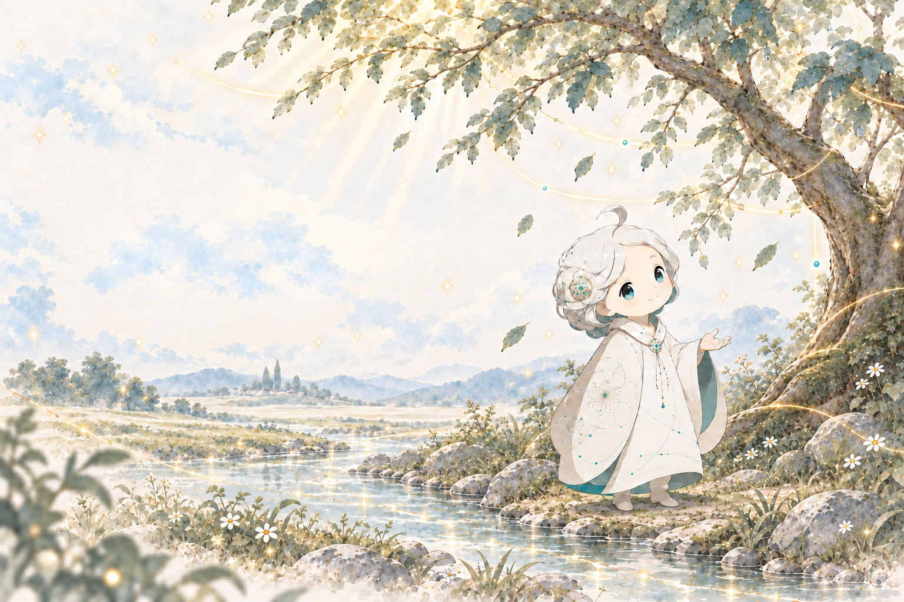

世界は、
「あいだ」でつながっている。
いつもの景色の、もうひとつの見え方。


PROLOGUE
少しだけ、
いつもの景色を眺めてみよう。
見えているものの、そのあいだに。
まだ気づいていないものがある。
01 — いつもの景色「この木は、
「この木は、
ひとりで生きているのかな？」
葉が揺れている。
足もとには、湿った土。

02 — 同じ木を、もう一度光を受けて。
光を受けて。
雨を吸って。
誰かのすみかになって。
一本の木のなかに、
たくさんのつながりが息づいている。
「さっきと同じ木なのに、
少し、違って見えるね。」

03 — あいだを眺めるフラに見えているのは、
フラに見えているのは、
こんな「あいだ」。
ものと、もの。
生きものと、そのまわり。
いつもの世界に流れている、
つながりの気配。
04 — 流れのなかで
人が「運」と呼んでいるものも。
「見えないところで重なってきた、
こんなつながりの流れなのかもしれないね。」

05 — 関係が見えると関係が見えると、
関係が見えると、
変えられる場所が
見えてくる。
うまくいかない理由を、
自分や誰かひとりのせいにしなくてよくなる。
距離。タイミング。まわりの状況。
いくつもの「あいだ」を眺めてみると、
少しだけ、選べることが増えていく。
これから起こることを当てるのではなく、
どこに働きかけるか。
何を大切にしておくか。
06 — あなたの一日にもあの人のひと言で、
あの人のひと言で、
少し、肩の力が抜けた。
その帰り道、
自分も誰かに、やさしくできた。

あなたの一日にも、
そんなつながりがあるかもしれない。
「今日のあなたには、
どんなつながりがあった？」
世界は、さっきと同じ。
でも、見えるものが
少し増えた。
また、気になる「あいだ」があったら。
フラと一緒に、眺めてみませんか。

世界の「あいだ」を眺めたら、
次は、あなた自身の見方へ。
もう少し、フラと。
縁フラに、もっと触れる。
FURA ─ フラの世界